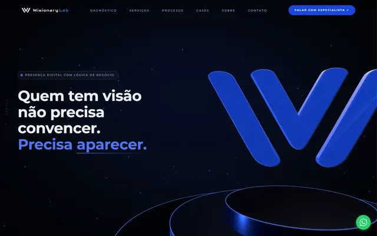
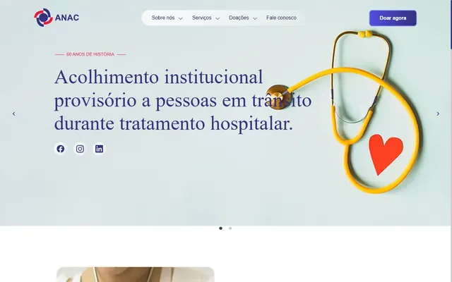
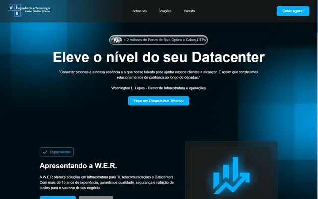
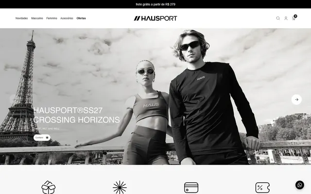
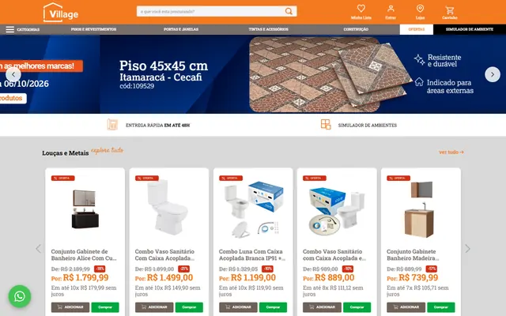
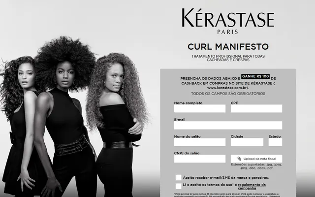
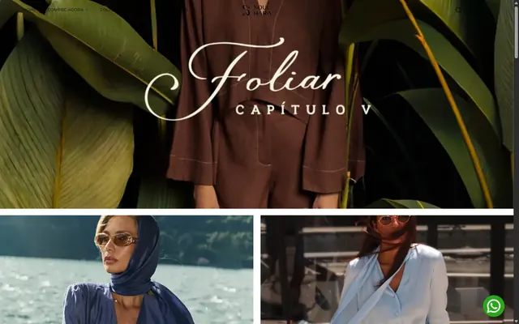
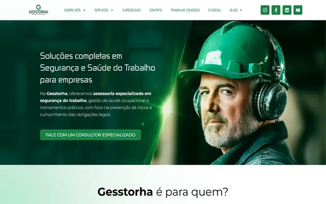

Marcas que já passaram pelo meu código
- Wisionary Lab
- Kérastase Paris
- L'Oréal
- ANAC
- Village Home Center
- Soul Hara
- Hausport
- W.E.R.
- Gesstorha
Cases selecionados
Projetos
-

Site institucional · WordPress + Three.js
Wisionary Lab
Site institucional criado para uma agência de presença digital. Tema WordPress próprio em PHP, cenas 3D interativas com Three.js sincronizadas ao scroll e JavaScript ES6+ modular, sem sacrificar performance nem a autonomia de conteúdo do cliente.
-

Site institucional · WordPress
ANAC (Casa do Cardíaco)
Redesign do site de uma associação com 60 anos de história no acolhimento a pessoas em tratamento hospitalar, com foco em acessibilidade e mobile.
-

Site institucional · WordPress
W.E.R. Engenharia e Tecnologia
Redesign do site de uma empresa de infraestrutura de TI e datacenters, com estrutura de conteúdo personalizada.
-

E-commerce · Olist Vnda
Hausport (abre em nova aba)
E-commerce de moda esportiva com templates customizados em Liquid e implementação da vitrine de produtos.
Em parceria com The Alfred (Série //A Digital)
-

Redesign de UX · Figma
Village Home Center
Redesign estratégico do e-commerce com foco em UX e mobile-first. Desenhei a nova experiência no Figma; o desenvolvimento e a publicação foram feitos pela 732 Mídia Marketing.
Em parceria com 732 Mídia Marketing
-

Landing pages · Campanha
Kérastase Paris
Landing pages de lançamento, com destaque para a Curl Manifesto: cadastro de profissionais de salão integrado ao CRM da marca.
Em parceria com The Alfred (Série //A Digital)
-

E-commerce · Shopify
Soul Hara
Loja de moda amazônica autoral com tema customizado em Liquid, experiência de compra otimizada e SEO de produto.
Em parceria com Volúpia Digital
-

Site institucional · WordPress
Gesstorha (abre em nova aba)
Site institucional em WordPress com PHP e ACF, moderno, responsivo e otimizado para SEO.
Em parceria com Volúpia Digital
-
Landing page
Meu Segredo Pro · L'Oréal (abre em nova aba)
Página de apresentação da plataforma Meu Segredo Pro, de L'Oréal Produtos Profissionais.
Em parceria com The Alfred (Série //A Digital)
Como eu trabalho
Do briefing ao deploy
-
Entender
Briefing, objetivos de negócio, público e referências. Defino o que o site precisa entregar antes de abrir o editor.
-
Desenhar
Wireframes e UI no Figma, sempre mobile-first, com componentes e estilos reutilizáveis.
-
Construir
HTML semântico, CSS/Sass e JavaScript, em código puro ou em WordPress, Shopify e VTEX.
-
Otimizar e publicar
Core Web Vitals, acessibilidade (WCAG 2.1), SEO técnico e testes entre navegadores antes do deploy.
Stack
Habilidades
-
Front-end
-
CMS & E-commerce
-
UI/UX
-
Performance & SEO
-
Ferramentas
-
Marketing & Integrações
Trajetória
Experiência
-
Analista Front-end
Grupo Ideal Trends | Busca Clientes
Jan/2026 - Atualmente- Desenvolvimento e manutenção de sites e landing pages em PHP dentro de plataforma proprietária de gestão de conteúdo;
- Implementação de interfaces e fluxos de UI com HTML5, CSS3, Sass/SCSS e JavaScript ES6+;
- Ambiente local com XAMPP e Laragon, incluindo gerenciamento e consulta de banco de dados via phpMyAdmin;
- Debugging e correção de inconsistências visuais e funcionais entre navegadores e resoluções;
- Participação em sprints de desenvolvimento e implementação de novas interfaces seguindo padrões técnicos internos.
-
Desenvolvedor Front-end & UI Designer
Projetos Independentes
Ago/2023 - Atualmente- Desenvolvimento de sites institucionais, landing pages e experiências web responsivas com HTML5, CSS3, JavaScript e PHP;
- Prototipação e definição de interfaces no Figma, conectando decisões de UI à implementação front-end;
- Projetos com foco em UX, SEO técnico, performance, acessibilidade e responsividade;
- Criação de componentes e estruturas reutilizáveis em WordPress com ACF, Elementor e PHP;
- Projetos selecionados: WER TI e ANAC / Casa do Cardíaco.
-
Web Designer & SEO
Volúpia Digital
Nov/2024 - Abr/2025- Desenvolvimento e manutenção de sites institucionais e e-commerces em WordPress e Shopify;
- Customização de temas e interfaces com PHP, ACF, Elementor e Liquid;
- Integrações com RD Station, Salesforce Marketing Cloud e Wake Creators;
- Otimização técnica de páginas com foco em SEO, rastreabilidade, indexação e Core Web Vitals;
- Projetos selecionados: Soul Hara (Shopify + Liquid) e Gesstorha (WordPress + PHP + ACF).
-
Desenvolvedor Front-end
The Alfred Digital | Série //A Digital
Abr/2022 - Ago/2023- Desenvolvimento de landing pages e e-commerces em VTEX e Olist Vnda;
- Customização de templates e interfaces para e-commerce e campanhas digitais;
- Páginas com foco em responsividade, performance e implementação de eventos de conversão;
- Criação de e-mails marketing responsivos e integrações com plataformas de automação;
- Projetos selecionados: Hausport, Kérastase Brasil e Meu Segredo Pro.
Quem sou
Sobre mim
Comecei no front-end construindo landing pages e e-commerces para marcas como Kérastase e Hausport, e logo entendi que um bom site não depende só do código nem só do design: depende dos dois falando a mesma língua.
Hoje atuo nesse meio-campo. Prototipo no Figma, desenvolvo com HTML, CSS/Sass, JavaScript e PHP e publico em plataformas como WordPress, Shopify e VTEX, sempre de olho no que o usuário não vê mas sente: velocidade, acessibilidade e consistência entre telas.
Atualmente sou Analista Front-end no Grupo Ideal Trends, onde desenvolvo e mantenho sites e landing pages em PHP. Fora do expediente, estudo Product Design e Design Systems, porque acredito que o melhor front-end é aquele que entende por que cada pixel está ali.
Contato
Vamos conversar?
Tem uma vaga ou um projeto em mente? Fale comigo por qualquer um destes canais.